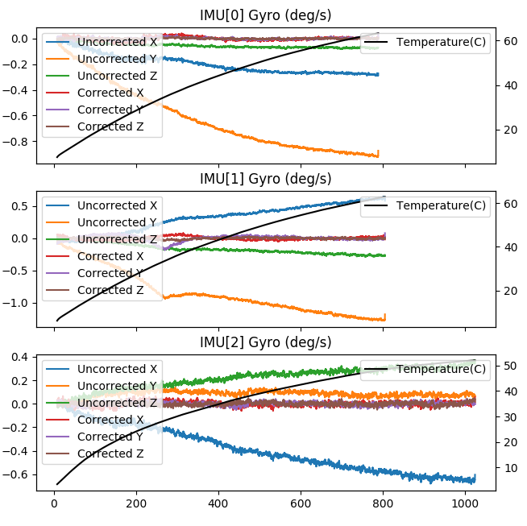

IMU Temperature Calibration¶
ArduPilot supports IMU temperature calibration in versions 4.1 and later. Calibrating the IMU for temperature changes can greatly reduce the amount of variation in the IMU and helps with flying in conditions where the temperature varies a lot between bootup and flight.
Note
this feature is only available currently on 2MB autopilots.
Temperature calibration is done by first setting up some parameters to establish the start of a calibration routine on the next boot-up, then taking the autopilot and placing it in a cold environment for several minutes to establish a lower calibration temperature. Then, quickly re-powering (and, optionally connecting to a GCS to monitor the process) in an environment at the hotter, upper calibration point.
Warning
You must not allow the autopilot to move, once re-powered, until the calibration is completed!
After the calibration is complete, you can also run an Offline calibration tool, to verify the calibration improvement.
The temperature calibration is stored in ArduPilot parameters, just like other types of calibration parameters. There is also the option to store the parameters in a way that persists across a full parameter reset, which allows support for factory calibration for vendors selling ArduPilot compatible autopilots.
Temperature Calibration Procedure¶
The key factors to a good temperature calibration are:
letting the autopilot cool to a temperature below the minimum operating temperature before starting the calibration
ensuring the IMU temperature that is reached during the calibration run is high enough to cover all flight conditions
ensuring that there is no movement during the calibration. Note that the autopilot does not need to be level, but it must not move.
Before you start the calibration process you need to setup some key parameters:
make sure the INS_ACCn_CALTEMP and INS_GYRn_CALTEMP parameters are already set (there is one parameter per IMU, make sure you set all of them). These are set automatically when you calibrate the accelerometers and gyroscopes. They record the temperature of the IMU at the time the offsets were calibrated, which is key information for the calibration process. If they are not already set (they default to -300 which is an invalid value) then you need to perform a 6-axis accel calibration.
set INS_TCALn_ENABLE to 2 for each IMU to enable IMU temperature calibration learning on the each IMU you want to calibrate. A value of 2 enables temperature calibration learning. The ENABLE parameter value of 2 takes effect on the next boot.
set INS_TCALn_TMAX to the temperature in degrees centigrade that you want to stop the calibration. This should be the high temperature that you expect to reach in your calibration run.
it is recommended that you ensure a microSD card is inserted and you have LOG_DISARMED set to 1 to log the IMU data used in the calibration process. While this is only required for the offline calibration check below, using it for the initial calibration is recommended in case you wish to inspect the raw data and to check for any movement that may have disturbed the calibration process.
For boards with a builtin IMU heater you may wish to raise BRD_HEAT_TARG to a higher than usual temperature. A value of 70 can be good for calibration. Make sure you change it back to a normal flight value (normally 45) when the calibration process is complete. A value is 70 is likely to be above what can be reached, so for boards with heaters a reasonable value for TMAX is 65 degrees C. Note that on some boards (notably the Hex CubeBlack and CubeOrange) the 3rd IMU is not close to the heater, so it’s maximum temperature needs to be about 10 degrees below the first two IMUs.
Once the parameters are setup, and the autopilot cooled to the minimum temperature, you should power on the flight controller in a warm environment, ensuring that it will not move throughout the calibration process.
The calibration process has a 10 minute timeout. If an IMU doesn’t increase it’s temperature by at least 0.5 degrees C over a 10 minute period then the calibration will complete and the parameters will be saved up to the point the temperature reached.
The parameters are also saved for intermediate temperatures throughout the calibration process. So if you run out of time (or patience) waiting for the calibration then you can stop it at any time by powering off the board. If you do this then you will need to manually change the INS_TCALn_ENABLE parameters from 2 to 1 to enable the new calibration data to be used. Otherwise it will start the calibration again on each boot. If you do interrupt the calibration process then you should power off the vehicle with a minimum of movement or you could invalidate the calibration. Stopping the calibration process by using a telemetry link to change the INS_TCALn_ENABLE parameters to 1 before powering off can also be done and is a good idea.
Note that the calibration process requires a minimum of 10 degrees C change in temperature between the starting and ending temperature. A range of at least 25 degrees C is recommended, ie from the kitchen freezer to your desk.
Monitoring the Calibration Process¶
If you have a buzzer connected then you will here a short periodic beep while the calibration is in progress. When the calibration is complete a completion tune will play. If you have a mavlink telemetry link to the vehicle then you can also monitor the progress via that link, graphing the IMU temperatures (which are in the RAW_IMU, SCALED_IMU2 and SCALED_IMU3 messages if you have mavlink2 enabled).
On completion the INS_TCALn_ENABLE parameters will change to 1 for “enable” for each IMU. Once all your IMUs have completed calibration you can reboot the vehicle. You should also:
reset the BRD_HEAT_TARG back to its normal value (usually 45) if you changed it
disable LOG_DISARMED if you had enabled it and want it disabled for normal usage
You may also wish to refresh your parameters and save all the parameters that start with the INS_TCAL prefix. You can restore these parameters to avoid needing a new temperature calibration if you ever do a complete reset of your parameters.
Offline Calibration Tool¶
The procedure outlined above will have completed an automatic online temperature calibration. If you had LOG_DISARMED set to 1 then the onboard log file allows you to do an offline calibration check. Doing an offline calibration has the advantage that you can inspect the improvements to the calibration by graphing the uncorrected and corrected calibration for the accelerometers and gyroscopes.
To perform an offline calibration you need to use the script in the ArduPilot git repository in Tools/scripts/tempcal_IMU.py. When you run this script on a log file from a calibration you will get two sets of graphs. One set is for the gyroscopes the other is for the accelerometers.
The image below shows the results of a run on a log file for 3 IMU board:
{kind=link}

The key features of the graphs are:
the first 3 lines on each graph (blue, orange and green) show the uncorrected IMU data. This allows you to see how much drift you have without temperature correction
the next 3 graphs show the corrected IMU data, showing how much the temperature calibration will help. For a good calibration these lines will all be close to zero
the IMU temperature is shown on the right hand scale
you should check for any sudden changes in the data, which indicates that the board was not kept still when calibrating
with multiple IMUs the graphs may span different temperature ranges and times. This happens as the IMUs reach their target calibration temperatures at different times
The calibration script will also save a copy of the new calibration parameters to the file tcal.parm, or a filename chosen with the –outfile command line option. You should load these parameters to enable the new calibration on the autopilot.
Other command line options are:
the –no-graph option disables the graphing, allowing for batch processing of log files
the –online option changes the calibration process to use the same algorithm as the online calibration method used inside the flight controller. This is useful for debugging
the –tclr option enables the use of the TCLR messages from the log instead of the IMU log messages. The TCLR messages record the exact filtered data used in the online calibration process. This is useful for debugging
the –log-parm option enables an additional set of graphs showing the IMU data with corrections applied using existing INS_TCAL parameters from your log file. This allows you to compare the new calibration against a previous temperature calibration
Factory Temperature Calibration¶
On autopilots based on the STM32F7 and STM32H7 microcontrollers we support storing temperature calibration parameters in persistent storage in the boards bootloader sector. This allows the calibration parameters to persist even with a complete parameter reset, including changing firmware type. This allows a vendor to ship autopilots pre-calibrated from the factory which is a great convenience for users.
To save parameters persistently you should perform a temperature calibration as described above then as a final step send a “flash bootloader” mavlink command to the autopilot. This will re-flash the bootloader with calibration parameters embedded in the final part of the bootloader sector in flash. You can inspect these parameters using the @SYS/persistent.parm sysfs file using a mavftp client.